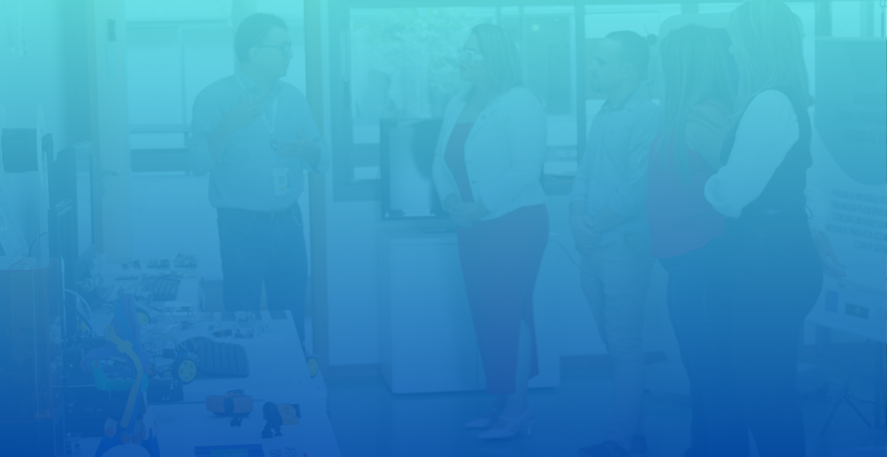
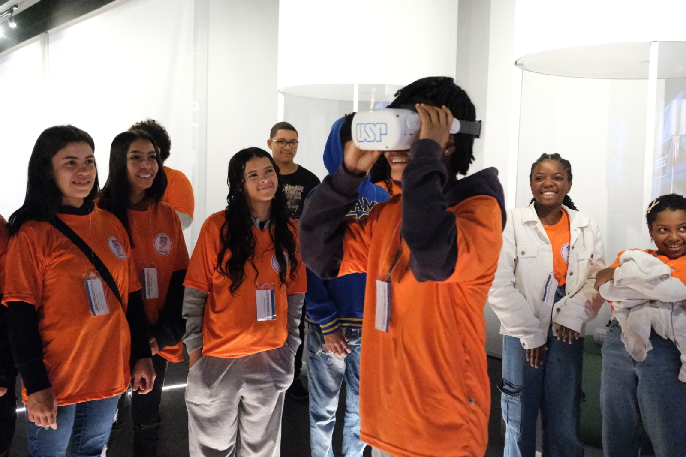

"Conectando Ciência e Transformação Digital para o Estado de São Paulo"
Transformar o conhecimento da universidade em soluções inovadoras que promovam inclusão digital, desenvolvimento sustentável e melhoria dos serviços públicos em todo o estado.
Somos uma iniciativa contínua, com o potencial de se tornar política pública, que conecta governo, academia, setor produtivo, sociedade civil e agências de fomento para acelerar a transformação digital.

Adotamos a Quíntupla Hélice, incorporando sociedade civil e agências de fomento. Essa evolução amplia a legitimidade social, sustentabilidade financeira e fortalece a missão de transformar ciência em impacto real.
Políticas públicas e regulamentação
Pesquisa e conhecimento
Inovação e aplicação
Participação e legitimidade
Financiamento e sustentabilidade
Coleta, análise e interpretação de dados de transformação digital em âmbito municipal e setorial.
Formulação de recomendações técnicas baseadas em evidências para orientação de políticas públicas municipais, estaduais e federais.
Materialização do retorno social do investimento em ciência e tecnologia, transformando pesquisas acadêmicas em produtos, serviços e políticas públicas.
Governança Contínua
Entre em contato conosco para saber mais sobre o OTDSP e como fazer parte.